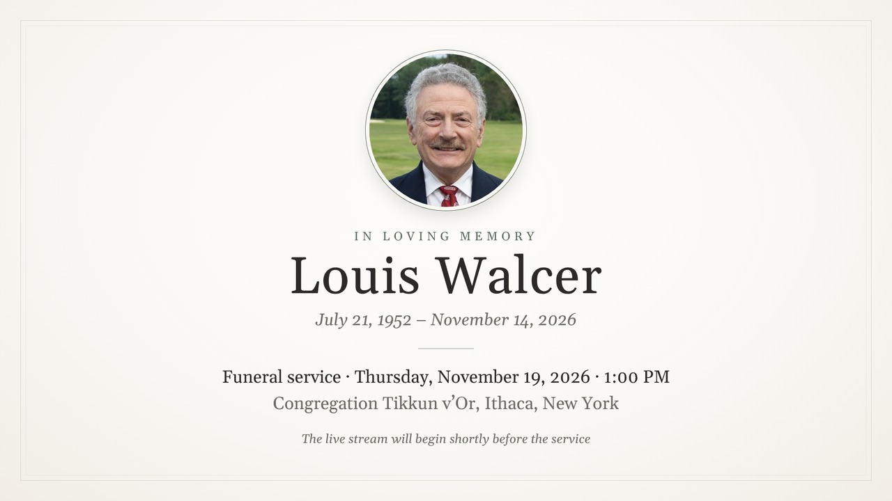

Lou Walcer
July 21, 1952 – November 14, 2026
#Arrangements
Arrangements are being handled by Bangs Funeral Home.
#Watch the service live

Watch on YouTubeor watch with the bulletin alongside to follow the order of serviceThe stream opens shortly before the service begins at 1:00 PM. The burial will not be streamed.
#Funeral & burial
8 pages · Download PDF
- When
- Thursday, November 19, 2026, at 1:00 PM
- Where
- Congregation Tikkun v’Or
2550 North Triphammer Rd, Ithaca, NY 14852 - Livestream
- For those who can't attend in person, the service at Tikkun v’Or will be streamed online. Watch the livestream on YouTube. The stream opens shortly before the service begins at 1:00 PM. The burial will not be streamed.
To be followed by burial at Lake View Cemetery.
#Reception
- When
- Thursday, November 19, 2026, 6:00 to 9:00 PM
- Where
- Carrier Ballroom, The Statler Hotel at Cornell
130 Statler Dr, Ithaca, NY 14853 - Parking
- Hotel valet and self-parking are available. The Hoy Road Garage is about a 7-minute walk, and there are limited metered spots on campus (pay with the ParkMobile app).
#In “Lou” of Flowers…
In place of flowers, the family asks that you consider a donation to NPR (National Public Radio) in Lou's memory.
NPR's form doesn't have an "in memory of" option, so you're welcome to mention Lou in the comment box.
You can also give to the Cornell University Library.
#Visiting Ithaca
Hotels in Ithaca are booking up quickly. The easiest way to see what's still available is Google Hotels.
#Obituary
Read and leave a memory on the Bangs Funeral Home obituary page.
Lou Walcer (July 21, 1952 – November 14, 2026), son of Abraham and Eleanor Walcer, was born in Brooklyn, New York, and raised in Lindenhurst, New York. He attended Cornell University as an undergraduate, beginning a lifelong relationship with the city of Ithaca.
After graduating with the Class of 1974, Lou earned his MBA at New York University while working as a medical copywriter. In New York City he connected with Roberta Bandel, a fellow member of the Cornell Class of 1974, and they married on April 8, 1979. He began a career in pharmaceutical marketing and product development in New Jersey for Schering-Plough, then moved to Paoli, Pennsylvania where he worked in marketing for Wyeth Pharmaceuticals.
In Pennsylvania, Lou and Roberta welcomed their son, Marshall Walcer, and their daughter, Adrienne Walcer. The family moved to Solon, Ohio, where Lou built his entrepreneurial and business development experience. From 2006 to 2011 he was part of the Cleveland Clinic Innovations team, managing a portfolio of successful startups.
Roberta spotted a job posting for the Cornell University Center for Venture Development in the Life Sciences. Lou applied, and became the center’s first director, happily returning to Ithaca. Under his leadership, the center spun off many successful entrepreneurial ventures. A fierce advocate for innovation, Lou was known as a passionate educator and mentor.
He kept working long past the point most people would have stopped, retiring in 2025. In his “retirement”, he served the U.S. Department of Commerce and U.S. State Department’s joint Commercial Law Development Program, lecturing on startup development, commercialization, incubation, fundraising, investor engagement and business planning. He also served as a visiting professor of Practice and Executive-in-Residence at the Cornell College of Engineering.
Lou was on the Board of Directors of MedTech NY, volunteered for the Cornell Class of 1974, and sang with the Savage Club, an Ithaca men’s performing group.
Lou was widely known for his sense of humor, enjoyed science fiction, was a devoted Tolkien fan, and he firmly preferred Picard to Kirk.
He is survived by the love of his life, his wife, Roberta; his son, Marshall, daughter-in-law Wesley, and grandson Ira; his daughter Adrienne and her partner, Andrew; his sister, Carol Finder; his sister-in-law, Margaret Bandel; and numerous nieces and nephews.
Bangs Funeral Home is handling arrangements, and the service will be held at Temple Tikkun V’Or at 1pm on Thursday, November 19, 2026. Lou will be laid to rest in Lake View Cemetery. An evening reception will be announced. All puns are welcome.
In Lou of flowers, the family asks that donations be made in his name to National Public Radio or the Cornell University Library.